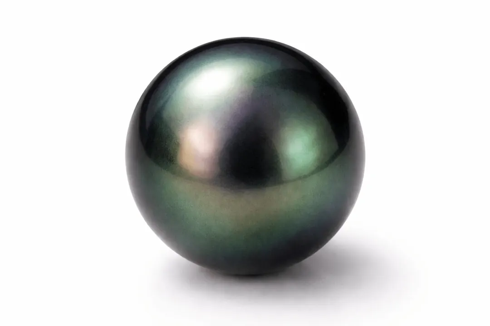

大溪地黑珍珠：不是黑的黑色珍珠
大溪地「黑」珍珠一點都不黑——它真正的名字，是「彩虹穿上了深色的禮服」。

核心定義
大溪地黑珍珠（Tahitian pearl）是由黑蝶貝（Pinctada margaritifera）孕育的養殖珍珠，主要產於法屬玻里尼西亞的環礁潟湖。它最迷人的地方是「黑底暈彩」：底色是深灰、綠褐甚至近黑，表面卻浮著孔雀綠、紫、藍、粉的虹彩——像夜空裡極光。
請記住：真正的黑珍珠沒有純黑的——它一定有綠色調或暈彩。如果你看到一顆「純黑發亮」的珍珠，它多半是染色珠或仿珠。
特徵與分類
| 品種 | 貝種 | 直徑 | 代表色 | 產地 |
|---|---|---|---|---|
| 大溪地珠 | 黑蝶貝 | 8–14mm | 灰綠底+暈彩 | 法屬玻里尼西亞 |
| 南洋金珠 | 金唇貝 | 9–16mm | 金色 | 澳洲/菲律賓 |
| 南洋白珠 | 白蝶貝 | 9–15mm | 銀白 | 澳洲/印尼 |
| Akoya 珠 | 馬氏貝 | 5–9mm | 粉白 | 日本/中國 |
大溪地珠的「黑」其實是深灰與深綠的混合——珍珠層裡的有機色素（porphyrin 類）讓它偏黑，而層疊的霰石片讓光產生干涉，浮出暈彩。越圓、越綠、暈彩越豐富，價格越高。
科學原理
珍珠的顏色與暈彩來自兩件事：一是黑蝶貝外套膜分泌的有機色素，讓珍珠層底色偏深；二是霰石（aragonite）薄片與貝殼蛋白（conchiolin）交替堆疊，形成微米級的「光子晶體」——光在其中干涉，把白光拆成彩虹。這叫結構色，原理和蝶翅、肥皂泡一樣。
所以「黑珍珠的綠」不是染料——它是物理結構製造的顏色。這也解釋了為什麼染色珠（染成純黑）看起來死板：染色只能改底色，改不出暈彩。
鑑定與鑑別方法
- 看暈彩：真黑珍珠必有綠/紫/藍暈彩，純黑多為染色
- 看色調：孔雀綠最貴，灰綠其次，純黑要警惕
- 摸珠孔：染色珠的色素常積在孔洞邊緣
- 用棉棒沾稀醋輕擦：染色珠可能掉色（謹慎操作）
- 證書：要求產地與處理說明（染色屬處理）
市場行情與保養建議
行情參考：大溪地珠 2026 年零售價，8–9mm 素圓珠約新台幣數千至一萬元，10mm 以上孔雀綠強暈彩的頂級珠單顆可達 3–8 萬元——直徑與暈彩是價格的兩個引擎。
提醒：黑珍珠怕酸、怕熱、怕香水；佩戴後用軟布擦拭，避免與鑽石等硬物摩擦。價格僅供參考，非投資建議。
常見誤區
市場上 99% 的大溪地珠都是養殖珍珠——黑蝶貝被植入珠核後養在潟湖裡。天然野生黑珍珠極罕見，價格是天價。
真正值錢的是「黑底上的綠色暈彩」——孔雀綠大溪地珠遠比純黑珠貴。純黑反而常是染色的。
冷知識
黑蝶貝雖然產黑珍珠，但它的殼緣帶一圈金色光澤——所以大溪地珠偶爾也能養出金珠，只是機率極低。
大溪地珠的核心產區在土阿莫土群島環礁——影星馬龍白蘭度曾買下其中的特提亞羅阿環礁，如今是全球最奢華的黑珍珠養殖場之一。
反直覺觀點
因為大家期待「黑」，商家就拼命染黑——市場上流通的「純黑珍珠」多數是染色珠。看懂暈彩，你才能繞過這個陷阱。
同尺寸下，灰綠底孔雀綠暈彩的珠子可以是普通灰黑珠的數倍價——顏色科學告訴你：干涉色才是寶石學上的「真顏色」。